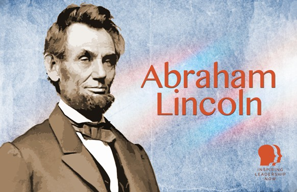

Abraham Lincoln
Abraham Lincoln, born in 1809 in a log cabin in Kentucky, is remembered as one of the greatest leaders in history. Despite a difficult childhood and limited formal education, Lincoln became a self-taught lawyer and politician. Elected president in 1860, his leadership was defined by the American Civil War and his commitment to preserving the Union. Lincoln’s speeches, including the Gettysburg Address, emphasized liberty, democracy, and equality.
A staunch opponent of slavery, Lincoln's refusal to compromise on the issue helped lead to the defeat of the Confederacy. His leadership during the war and dedication to justice and unity cemented his place as a symbol of freedom and human rights. Tragically, Lincoln was assassinated by John Wilkes Booth, a Confederate sympathizer, in April 1865, just before the Civil War ended.